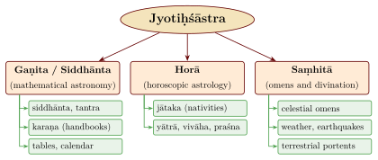
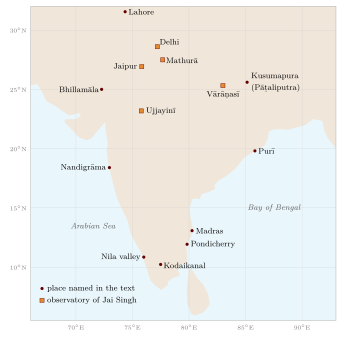

Chapter 1: Introduction: Jyotiṣa and Its History¶
1.1 The Word and the Field¶
The Sanskrit word jyotiṣa is derived from jyotis, “light” or “luminary”, and means the knowledge of the heavenly lights: the Sun, the Moon, the planets and the stars. In the classification of Vedic learning it is the last of the six vedāṅgas, the “limbs” or auxiliary sciences of the Veda, alongside phonetics (śikṣā), ritual procedure (kalpa), grammar (vyākaraṇa), etymology (nirukta) and metre (chandas). Its original task was practical and religious: to tell the priest when a sacrifice was to be performed. The earliest surviving text of the discipline, the Vedāṅga Jyotiṣa, says as much (Chapter 3).
Over the next two thousand years the word came to cover a very wide field. A learned jyotiṣī (also called gaṇaka, “calculator”, daivajña, “knower of fate”, or sāṃvatsara, “calendar-maker”) of the sixth century CE was expected to compute the positions of the planets and the circumstances of eclipses, to cast and interpret horoscopes, to choose auspicious moments, and to interpret omens in the sky, in the weather and in the behaviour of animals. Varāhamihira, writing in the sixth century, describes the science of the lights (jyotiḥśāstra) as resting on three “branches” (skandhas), and gives the name saṃhitā to a work that covers the whole of it (Varāhamihira 1981–1982, 1.9). The second chapter of his Bṛhatsaṃhitā lists the qualifications of the ideal practitioner, who must master all three.
This volume is a history of the first of these branches, mathematical astronomy, and of the calendar it served. The other two branches are not ignored, since they were part of the same profession and were often practised by the same people, but they are treated in a separate chapter (Chapter 15) and described historically.
The title of this volume, Khagola Jyotiṣa, combines the name of the discipline with the word khagola, “sky-sphere”, the term used by the siddhāntas for the celestial sphere on which the motions of the heavenly bodies are described. It is meant to signal the volume’s focus: the mathematical description of the sphere of the heavens and of the bodies that move on it, as opposed to the reading of their supposed influence on human affairs.
1.2 The Three Branches¶

Gaṇita or siddhānta.
The mathematical branch computes the positions of the Sun, Moon and planets from models and parameters, and from these derives the calendar, the times of eclipses, planetary conjunctions and heliacal risings, the lengths of day and night at a given latitude, and the problems of “direction, place and time” (tripraśna). Its texts are of three kinds, distinguished by the epoch from which they count days: the siddhānta (counting from the beginning of the kalpa), the tantra (from the beginning of the current Kali age) and the karaṇa (a handbook counting from a recent epoch) (Pingree 1981). To these were added tables (sāraṇī, koṣṭhaka) and, in south India, the verse tables called vākyas. This is the subject of Chapters 6 to 10 and 12.
Horā.
The horoscopic branch interprets the positions of the planets at a moment, above all the moment of birth (jātaka), and also the moments of setting out on a military expedition (yātrā), of marriage (vivāha) and of asking a question (praśna). The word horā is the Greek hōra, and the whole branch rests on the Hellenistic astrology translated into Sanskrit in the early centuries CE (Chapters 5 and 15).
Saṃhitā.
The branch of omens collects signs in the sky (the motions and colours of planets, comets, halos, eclipses), in the atmosphere (clouds, winds, rain) and on the earth (earthquakes, the behaviour of animals, the appearance of buildings and objects), and states what each portends for kings, kingdoms, crops and people. Varāhamihira’s Bṛhatsaṃhitā is the classic text. Its roots lie in Vedic omen lore and, according to Pingree, partly in Mesopotamian omen series (Pingree 1997).
Why this volume separates the three branches
In the tradition the three branches were held together by a single profession and by the belief that the heavens are signs for human affairs. The modern history of science separates them for a simple reason: they stand in different relations to evidence. The predictions of mathematical astronomy (where the Moon will be, when an eclipse will begin) can be tested against the sky, and Indian astronomers did test and revise them. The predictions of horoscopic astrology and of omen texts have been tested in modern controlled studies and have not been confirmed (Chapter 15). Astrology and omen literature are nevertheless part of the history of Indian thought and society, and they drove much of the demand for accurate astronomy. They are described here as history, not as a source of knowledge about the future.
1.3 An Outline of the History¶
The history of astronomy in India can be divided into broad periods. The dates are approximate, and the boundaries are not sharp.
- Vedic period (c. 1500–500 BCE)
- The Ṛgveda (core hymns c. 1500–1200 BCE) knows a year of twelve months and 360 days, names the Sun, Moon and dawn as deities, and mentions an eclipse in mythic terms (RV 5.40). The later Vedic texts list the twenty-seven or twenty-eight nakṣatras (lunar asterisms) and use them to date rituals (Chapters 3 and 4).
- Vedāṅga period (second half of the first millennium BCE?)
- The Vedāṅga Jyotiṣa sets out a five-year luni-solar calendar for the ritual. The canonical Jain texts on the sun and moon (Sūryaprajñapti, Candraprajñapti) use a similar scheme within Jain cosmology. The date of the Vedāṅga Jyotiṣa is disputed (Chapter 3).
- Contact and transformation (c. 200 BCE–400 CE)
- Greek astrology and elements of Hellenistic mathematical astronomy reach India, notably through the Western Kṣatrapa kingdom in western India. The twelve-sign zodiac, the seven-day week and the horoscope enter Indian practice (Chapter 5).
- Classical siddhānta (c. 400–1200 CE)
- The systems summarised by Varāhamihira in the Pañcasiddhāntikā (epoch 505 CE); Āryabhaṭa’s Āryabhaṭīya (499 CE); Brahmagupta’s Brāhmasphuṭasiddhānta (628 CE); Lalla, Vaṭeśvara, Muñjāla and Śrīpati; Bhāskara II’s Siddhāntaśiromaṇi (1150 CE) (Chapters 6 to 9).
- Regional schools (c. 1200–1700)
- Handbooks and tables proliferate; the Kerala school of Mādhava (c. 1340–1425), Parameśvara and Nīlakaṇṭha (Tantrasaṅgraha, 1500) revises planetary theory and develops infinite series (Chapter 10).
- Indo-Islamic interaction (c. 1250–1750)
- Perso-Arabic astrology enters Sanskrit as tājika from the thirteenth century (Chapter 15); Sanskrit works on the astrolabe (Mahendra Sūri, 1370), translations of Persian tables at the Mughal court, the debates of Kamalākara and Munīśvara, and the observatories of Sawai Jai Singh in the 1720s and 1730s follow (Chapter 11).
- Colonial and modern period
- European study of Indian astronomy from the late eighteenth century; the Madras Observatory; the survival of the traditional almanac; the national calendar of 1957 (Chapters 13 and 16).
Two features of this history deserve emphasis at the outset. First, Indian astronomy was never sealed off from its neighbours. It received Mesopotamian and Greek ideas in antiquity, gave its methods to Sasanian Iran and, in the eighth century, to the Islamic world, and received Islamic astronomy again from the fourteenth century onwards. Its originality lies less in being untouched than in what it made of what it received: the sine function, the day-count (ahargaṇa) method of computation, great integer period-relations, and later the infinite series of the Kerala school. Second, the tradition was continuous. The Sūryasiddhānta and the handbooks derived from it were still being used to compute almanacs in the twentieth century, and many almanacs are still computed from them today.
1.4 The Sources¶
1.4.1 Genres of astronomical writing¶
Indian astronomy survives almost entirely in Sanskrit verse, in thousands of manuscripts, most of them from the last five centuries. David Pingree’s Census of the Exact Sciences in Sanskrit (Pingree 1970–1994) lists the authors and manuscripts known to him and remains the basic finding aid; his Jyotiḥśāstra (Pingree 1981) is the standard survey of the literature. A few important works were written in other languages: the Yuktibhāṣā of Jyeṣṭhadeva in Malayalam (c. 1530), astronomical and calendrical works in Tamil, and, from the Mughal period, astronomical tables in Persian.
The main genres were:
-
the siddhānta or tantra, a complete treatise covering mean and true motions, the three problems of direction, place and time, eclipses, conjunctions, heliacal risings, the cosmography of the sphere and, often, instruments;
-
the karaṇa, a practical handbook using a recent epoch and simplified rules, such as Brahmagupta’s Khaṇḍakhādyaka (665), Bhāskara II’s Karaṇakutūhala (1183) and Gaṇeśa Daivajña’s Grahalāghava (1520);
-
tables (sāraṇī), which became common from the second millennium; many survive only in manuscript (Montelle and Plofker 2018);
-
commentaries (bhāṣya, ṭīkā, vyākhyā, vāsanā), which explain, give worked examples, supply demonstrations (upapatti, vāsanā) and sometimes correct the parameters of the root text.
1.4.2 Numbers in verse¶
Because the texts were composed in verse and transmitted by memorisation and copying, astronomers developed ways of writing large numbers in metrical form. Three systems were widely used:
-
Word-numerals (bhūtasaṅkhyā): a word for something that comes in a known number stands for that digit (“moon” for 1, “eye” for 2, “fire” for 3, “Veda” for 4, “sky” or “void” for 0), and the digits are read from the lowest place upwards. This is the commonest system.
-
Āryabhaṭa’s alphabetic notation: the twenty-five “classed” consonants ka to ma stand for 1 to 25, the unclassed consonants ya to ha for 30, 40, …, 100, and the vowels multiply by successive powers of 100. It allowed Āryabhaṭa to state all the revolution numbers of his system in two verses (Gītikāpāda 3–4) (Āryabhaṭa 1976).
-
Kaṭapayādi: each consonant stands for a digit (Table 1.1), so that any word or phrase encodes a number. It was especially popular in Kerala, where the vākyas for the Moon’s position were written in it (Chapter 10).
| 1 | 2 | 3 | 4 | 5 | 6 | 7 | 8 | 9 | 0 |
|---|---|---|---|---|---|---|---|---|---|
| ka | kha | ga | gha | ṅa | ca | cha | ja | jha | ña |
| ṭa | ṭha | ḍa | ḍha | ṇa | ta | tha | da | dha | na |
| pa | pha | ba | bha | ma | |||||
| ya | ra | la | va | śa | ṣa | sa | ha |
1.4.3 Practitioners and their world¶
Most of the authors whose names survive were Brahmin men, many of them from hereditary families of astronomers in which skill and manuscripts passed from father to son: the family of Bhāskara II in the Deccan, that of Gaṇeśa Daivajña on the western coast, the Kerala Nampūtiri families. Jain monks wrote on astronomy and astrology too (Mahendra Sūri, the author of the first Sanskrit treatise on the astrolabe, was a Jain), and from the fourteenth century Muslim astronomers and patrons, and Persian-reading Hindu scholars, shaped the field. No woman is known as the author of a Sanskrit astronomical treatise, and evidence for women as patrons or copyists of astronomical manuscripts has not been systematically collected; women appear in the record mainly as the subjects of astrological rules (Chapter 15) and as keepers of the many fasts (vratas) whose dates the almanac fixed (Chapter 13). In Bengal, sayings about weather and sowing are attributed to a legendary woman astrologer, Khanā (see Volume 15, Kṛṣi and Jīva Vijñāna). The tradition’s social base was therefore narrow, and its technical knowledge was in large part a family and caste possession. Its patrons were kings, temples and the many households that needed almanacs and horoscopes (Yano 2003).
Astronomers worked for those patrons. Āryabhaṭa says he wrote at Kusumapura (Pāṭaliputra); Brahmagupta wrote under a Cāpa king at Bhillamāla in Rajasthan; Bhāskara II’s grandson was court astrologer to a Yādava king, and the family’s college at Patna (in present-day Maharashtra) was endowed by an inscription of 1207 (Pingree 1978). Mahendra Sūri wrote at the court of Fīrūz Shāh Tughluq, Nityānanda at that of Shāh Jahān, Jagannātha at that of Jai Singh. Figure 1.2 shows where some of them worked.

1.5 How Indian Astronomers Worked¶
The mathematical astronomy of India was above all a science of computation. Its aim was to predict the positions of the heavenly bodies and the times of the phenomena that mattered for the calendar and for astrology; its theories were judged mainly by whether their predictions agreed with what was seen. Pingree, who studied the tradition more widely than anyone, stressed this computational, instrumental character (Pingree 2003). The texts say little about how parameters were obtained, and they rarely record observations. But they do record changes of parameter, and from the seventh century onwards authors discuss the disagreement between computation and observation (dṛk) and correct their parameters by small adjustments (bīja).
Two of the most explicit statements of this principle come from Kerala. Parameśvara (c. 1360–1455) records eclipse observations made over many years and revised the parameters then in use in his Dṛggaṇita (1431). Nīlakaṇṭha Somayājī (1444–c. 1545) argued that astronomical parameters must be revised from time to time by observation, because no system remains accurate for ever (Chapter 10). Commentators also supplied demonstrations of rules, called upapatti or vāsanā. Bhāskara II wrote such a commentary (the Vāsanābhāṣya) on his own Siddhāntaśiromaṇi, and the Malayalam Yuktibhāṣā gives long demonstrations for the results of the Kerala school (Sarma et al. 2008). The reasons astronomers gave for their methods, and how they weighed observation against the authority of earlier texts and of scripture, have been examined by Minkowski (2002).
1.6 The Modern Study of Indian Astronomy¶
Europeans began to study Indian astronomy seriously in the late eighteenth century. The French astronomer Le Gentil had a Tamil eclipse computation demonstrated to him at Pondicherry (Section 13.8), and tables brought to Paris from India started a long debate about the antiquity of Indian astronomy (Section 16.4.1). The nineteenth century produced the first translations, above all Ebenezer Burgess’s annotated Sūryasiddhānta (Burgess 1860), and the first modern synthesis, by George Thibaut (Thibaut 1899). Śaṅkara Bālakṛṣṇa Dīkṣit’s Marathi history of Indian astronomy (1896; English translation (Dikshit 1969–1981)) remains valuable.
In the twentieth century the field was transformed by critical editions and technical studies: Otto Neugebauer and David Pingree on the Pañcasiddhāntikā (Neugebauer and Pingree 1970–1971) and the transmission of Greek astronomy, Pingree’s Census and surveys, Roger Billard’s statistical analysis of the parameters (Billard 1971), K. S. Shukla’s editions of Āryabhaṭa and Bhāskara I (Āryabhaṭa 1976; Shukla 1976; Bhāskara I 1960), K. V. Sarma’s editions of the Kerala texts (Nīlakaṇṭha Somayājī 1977) and his history of the Kerala school (Sarma 1972), the history edited by Sen and Shukla (1985), the source-book of Subbarayappa and Sarma (1985), and Kim Plofker’s Mathematics in India (Plofker 2009), which covers astronomy as much as mathematics.
The subject has also been drawn into debates about national identity. Some writers have used astronomical references in the Vedas to argue for very early dates for the Vedic texts, or have presented Indian astronomers as anticipating Copernicus, Newton or modern cosmology. Others, in the opposite direction, have treated Indian astronomy as a mere copy of Greek models. This volume tries to avoid both distortions. Where scholars disagree (on the date of the Vedāṅga Jyotiṣa, on how much of the siddhānta system came from Greece, on whether the Kerala series reached Europe) the disagreement is stated. Claims of “anticipation” are examined on their merits in Chapter 16.
1.7 The Plan of This Volume¶
Chapter 2 describes, for readers new to the subject, the phenomena of the naked-eye sky that Indian astronomy set out to explain. Chapter 3 examines astronomy in the Vedic texts and the Vedāṅga Jyotiṣa, and the calendrical astronomy of the Jain canon and of early Buddhist texts. Chapter 4 is devoted to the nakṣatras and the star positions of the Sūryasiddhānta. Chapter 5 discusses the Mesopotamian and Greek contributions and the formation of the siddhānta systems, as seen through Varāhamihira’s Pañcasiddhāntikā. Chapters 6 to 8 explain how a siddhānta works: its time scales and parameters, its trigonometry and spherical astronomy, including the shadow problems of the gnomon, and the everyday computational tools of the astronomer (Chapter 6), its planetary models (Chapter 7) and its eclipse computations (Chapter 8). Chapters 9 and 10 follow the astronomers and schools from Āryabhaṭa to the seventeenth century. Chapter 11 deals with instruments, the encounter with Islamic astronomy and the observatories of Jai Singh. Chapter 12 turns to the working astronomer: the handbooks and tables from which almanacs were actually computed, with a worked day-count, the profession and its families, the manuscripts, and the correction of parameters by observation. Chapter 13 describes the calendar and almanac; Chapter 14 the great time cycles and the cosmologies of the siddhāntas and Purāṇas; Chapter 15 astrology and omen literature, including the treatment of comets and meteors, in historical perspective. Chapter 16 follows Indian astronomy to the Islamic world, Europe and East Asia, describes the colonial and modern periods (the European debate over the antiquity of Indian astronomy, the Madras Observatory and its Indian assistants, and the last attempts to reform the siddhāntas from within), places Indian astronomy among the other astronomical traditions of the pre-modern world, and examines some common modern misreadings. Appendices give a worked computation with the Sūryasiddhānta, a table of the principal texts and their editions, a guide to further reading, a glossary and a chronology.
1.8 Reading an Astronomical Verse¶
Two short examples show how numbers were packed into verse and why commentaries were indispensable.
Āryabhaṭa’s alphabet.
The third verse of the Gītikāpāda begins by giving the revolutions of the Sun in a yuga as khyughṛ. In Āryabhaṭa’s notation the consonant kha has the value 2 and ya the value 30; joined to the vowel u, which multiplies by \(100^2\), they give \((2 + 30) \times 10{,}000 = 320{,}000\). The consonant gha has the value 4, and joined to the vowel ṛ, which multiplies by \(100^3\), it gives 4,000,000. The sum is 4,320,000, the number of solar years, and hence of solar revolutions, in Āryabhaṭa’s yuga. Two syllables thus record a seven-digit number; the same verse gives the revolutions of the Moon, the earth’s rotations and the mean revolutions of Saturn, Jupiter and Mars in the same way (the mean planets Mercury and Venus move with the Sun), and the next verse, among others, those of the Moon’s apogee and of the śīghra apices of Mercury and Venus (Āryabhaṭa 1976). The system is extremely compact, but a single miscopied syllable changes a number, and Āryabhaṭa’s successors preferred the more redundant word-numerals.
Word-numerals.
A verse attributed to Mādhava of Saṅgamagrāma and quoted by later Kerala authors (Chapter 10) states the circumference of a circle whose diameter is \(9 \times 10^{11}\) (nine nikharvas) in eleven word-numerals: vibudha (“gods”, 33), netra (“eyes”, 2), gaja (“elephants”, of the eight directions, 8), ahi (“serpents”, 8), hutāśana (“fires”, 3), tri (“three”, 3), guṇa (“qualities”, of which there are three, 3), veda (4), bha (“asterisms”, 27), vāraṇa (“elephants”, 8) and bāhu (“arms”, 2). The compound triguṇa thus contributes two numerals, not one. The first word fills the lowest places: vibudha gives the units and tens (33), netra the hundreds (233), and each following word the next place or places, so that after hutāśana, tri and guṇa the number stands at 33,388,233, and veda, bha, vāraṇa and bāhu complete it. Read from the end, the numerals are 2, 8, 27, 4, 3, 3, 3, 8, 8, 2, 33, which written out in full give the thirteen digits of 2,827,433,388,233. Divided by the diameter, this gives \(\pi \approx 3.14159265359\), correct to eleven decimal places (Volume 11, Gaṇita, discusses the verse and its mathematics). Here the words are ordinary Sanskrit nouns, so the verse can still be read as a sentence, and a copyist who preserves the metre is likely to preserve the number. The reader, however, has to know the conventions: “elephants” could be eight (the elephants of the directions) and “gods” thirty-three (the Vedic count). Commentaries explain such conventions.
1.9 Learning and Transmission¶
Astronomy was learned from a teacher, often a father or uncle, by memorising the root text and working through its rules with a commentary, examples and calculations on a board or in sand. Manuscripts were written on palm leaf in the south and east, on birch bark in Kashmir and the north-west, and increasingly on paper in the second millennium. Since palm leaf and paper decay in the Indian climate, texts survived only if they were copied every few generations, and many works known by name are lost, among them Āryabhaṭa’s midnight system and much of the work of the Kerala astronomer Mādhava. Most surviving astronomical manuscripts are therefore late copies, held today in public and private libraries in India and abroad, many still uncatalogued and unedited (Pingree 1970–1994). Chapter 12 returns to the manuscripts and to the families who kept them.
Copying and commenting were also the means of innovation. A commentator could explain away a difficulty in his root text, supply an alternative rule, or quietly change a parameter; an author of a new handbook could state that his parameters had been corrected by observation. Reading the history of Indian astronomy therefore means reading layers of text, each in conversation with earlier ones.
1.10 Conventions Used in This Volume¶
Sanskrit terms and names are given in the International Alphabet of Sanskrit Transliteration (IAST). Dates are given in the Common Era; where a text gives its own date or epoch, that date is used, and other dates are approximate. Traditional dates are labelled as such. Following a common practice in the history of Indian astronomy, “Sine” with a capital letter means the Indian half-chord \(R\sin\theta\) of a circle of radius \(R\), and “sine” the modern ratio. Sexagesimal numbers are written with a semicolon after the integer part and commas between the sexagesimal places: thus 365;15,31,30 days means \(365 + \tfrac{15}{60} + \tfrac{31}{60^2} + \tfrac{30}{60^3}\) days. Translations of Sanskrit verses are the author’s, following the editions cited; verse numbers vary between editions, and the edition followed is the one cited at each quotation.
Further Reading¶
Plofker (2009) is the best single introduction. Pingree (1981) surveys the literature and Pingree (1978) the history of the models. Sen and Shukla (1985) and Subbarayappa and Sarma (1985) provide extensive translated extracts. Yano (2003) is a short, reliable account of the calendar, astrology and astronomy together.